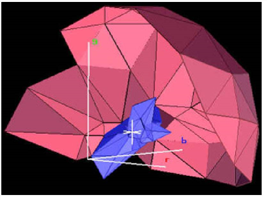
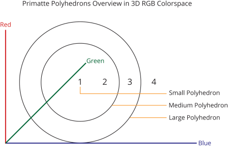
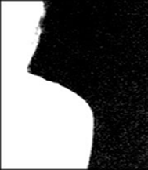
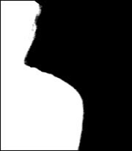
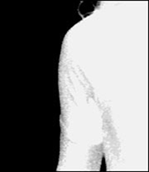
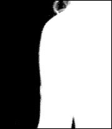
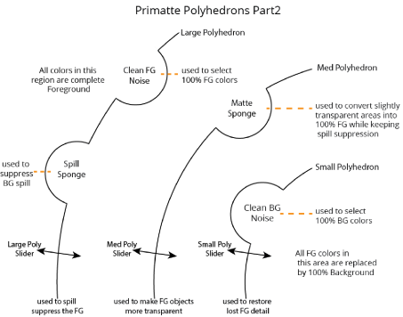
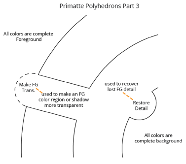

Primatte chromakey 算法是一种复杂的颜色空间分割方法，可以很容易地解释，以帮助用户使用该工具实现最大的有效性。基本上，Primatte 将前景图像中的所有颜色分割成四个独立的类别之一。结果是溢出抑制前景图像和遮罩，用于将修改后的前景应用于合适的背景。
Primatte 在 3D RGB 颜色空间中工作。这是图像处理后 Primatte 算法的视觉表示。

通过操作 Primatte 界面，您基本上创建了三个同心、多面多面体。这些可以被描绘成三个地球仪 (或多面体或多边形)，一个在另一个中，共享一个共同的中心点。这些多面体的创造将所有可能的前景色分成四个区域之一; 在小多面体内 (1) ,在中小型多面体之间 (2) 在中型和大型多面体之间 (3) 在大多面体外面 (4) .

创建的四个区域描述如下:
区域 1 (在小多面体内)-此区域包含所有被认为 100% 背景的前景图像颜色。这些是绿色或蓝色或用作前景图像支持颜色的任何颜色。
区域 2 (在中小型多面体之间)-该区域包含前景对象边缘的所有前景色，在玻璃、玻璃反射、阴影中, 水和其他透明和半透明的颜色区域。这些颜色区域还应用了溢出抑制，以消除背衬屏幕上的颜色溢出。
区域 3 (在中型和大型多面体之间)-此区域包含 100% 为前景的所有前景图像颜色，但对其应用溢出抑制，以从支持屏幕中删除颜色溢出。否则，它们是 100% 纯色前景色。
区域 4 (在大多面体之外)-此区域包含未从原始前景图像修改的所有 100% 前景图像颜色。这些颜色没有溢出抑制。
在使用 Primatte 的第一步 ( 智能 选择 BG 颜色 )，要求您在原始前景图像上指示背衬颜色。样本通常应该取自前景对象附近的中等阴影区域。通过中等阴影区域，这意味着如果绿色是背衬颜色，前景图像的绿色区域有许多绿色阴影，从非常浅绿色到几乎黑色, 应该选择介于这些极端范围之间的绿色阴影。如果你使用这个样本没有得到好的结果，你应该重置灵长类动物，然后用稍微暗一点或更轻一点的绿色样本。灵长类动物的第一个样本通常决定最终结果，因为所有三个多面体的中心点都是基于这个第一个样本创建的。
可以选择单个像素或一系列像素 (蜗牛轨迹或矩形样本)。如果拍摄了一系列像素，则对样本进行平均以获得单一颜色样本。这个单像素或平均颜色样本成为小多面体的中心。该颜色周围的其他一些阴影包含在原始的小多面体中。
注意: 建议选择一个像素作为第一个样本，这样你就可以知道多面体的中心点在哪里。如果制作了盒子样品或长蜗牛样品，你只能猜测最终成为中心点的平均颜色。你可以了解如何通过重置抽样算法的影响 Primatte 节点，观看的 alpha 通道，并单击周围的绿色或蓝色屏幕面积在 智能选择 BG 颜色 操作模式。这样，您可以立即看到多面体初始设置的结果。
使用 Primatte 的第二步是通过在小多边形中添加额外的绿色或蓝色色调来清理背衬颜色区域。第二步 ( 清洁 BG 噪音 ) 通常在查看黑白 alpha 通道时执行。
|
 |
 |
|
背景之前
噪音去除。 |
背景后
噪音去除。 |
而在 清洁 Bg 噪音 采样模式，您可以如上面的左侧图像所示对白色乳白色区域进行采样。当您对这些区域进行采样时，它们会变成黑色，如上面的右侧图像所示。
Primatte 算法中发生的事情是，这些新的绿色阴影 (白色乳白色区域) 被添加到小多边形中，所有绿色或蓝色的阴影都被移动。这种技术的优点是多面体扭曲，只封闭背衬屏幕中的绿色阴影。这些颜色周围的其他绿色阴影在前景中不受干扰。
现在你已经创建了一个小多面体，你需要塑造中、大多边形。默认的中型和大型多边形都是自动创建的，然后根据接下来的几个 Primatte 操作进行修改。第三个灵长类动物步骤 ( 清洁 FG 噪音 ) 是对图像 100% 前景区域中的灰色区域进行采样和消除。
|
 |
 |
|
前景噪声之前
移除。 |
前景噪音后
移除。 |
同样，在前景对象的深色灰色区域上制作几个样本，直到其颜色为纯白色。Primatte 正在用取样的每个颜色区域塑造大多面体。在这个步骤和前面的步骤中都应该小心，不要采样太靠近前景对象的边缘。过于靠近前景对象的边缘会导致前景对象周围出现硬边。Primatte 使用这些样本修改和形状的中型和大型多边形所需的形状。此时，已经创建了遮罩或键，并将允许前景对象组合成新的背景图像。
如果现在查看 RGB 通道，前景对象的边缘 (有时是中心) 通常会出现颜色溢出。当在前景对象的边缘时，这种溢出来自前景对象的边缘混合成背衬颜色的地方。如果它位于前景对象的中心，它通常是由背衬屏幕反射的颜色产生的。下一个灵长类动物步骤，要么 溢出海绵 , 微调 或 溢出 (-) ,现在可以用来消除这种溢出颜色。
让我们看看在执行下一步时 Primatte 算法中发生了什么。以下是 Primatte 中的各种工具在使用时对多面体的作用:

正如你上面看到的, 溢出海绵 凸出指定颜色区域中的大多面体。通过在出现溢出的特定区域中单击图像来指定颜色区域。例如，如果你点击前景人脸颊上的一些溢出物，Primatte 会去最接近那个特定肤色的大多面体的部分，并在那里凸出多面体。因此，肉色从大多边形之外移动到中多边形和大多边形之间。这是 区域 3 而且，如果你记得，是 100% 前景与溢出抑制。由于抑制，溢出从脸颊颜色和前景上所有其他颜色的阴影中删除。然后，您将继续对图像中存在溢出的区域进行采样，每个采样将从另一个颜色区域中删除溢出。
当所有溢出都被移除时，你应该有一个最终的复合材料。作为最后一步，您应该查看 alpha 通道，并确保灰色透明区域没有出现在前景区域中。如果有，您应该选择 哑光海绵 操作模式并对这些灰色像素进行采样，直到它们再次全部变成白色。
的 哑光海绵 和 溢出海绵 工具凸出或凹进多面体预先选定的量。如果没有达到预期的结果，或者结果对图像来说太极端，可以应用手动方法。您应该选择 微调 滑块，选择感兴趣的颜色区域，然后移动适当的滑块以获得所需的结果。
例如，要删除溢出，请选择复合图像上有溢出的区域。将溢出或大多边形滑块向右移动一点，大多边形凸出和溢出应该会消失。如果有必要，多搬一点。将该滑块向右移动可以消除溢出 (将颜色从大聚体外部移动到中大聚体之间)，并将其向左移动, 凹进大多边形并将该颜色区域移动到大多边形之外。
如果您对前景对象阴影进行采样，然后移动 M-poly (反式) 向右滑动，阴影变得更加透明。这对于将合成阴影与平板摄影上的阴影相匹配非常有用。它也可以用来使云或烟更透明。
如果一些前景细节在合成过程中消失，您可以选择细节应该在哪里，然后移动 S-poly (详细信息) 向左滑动。这将在该颜色区域中凹进小多边形，并将小多边形中的细节像素释放到中小多面体之间的可见区域。
的 溢出海绵 和 哑光海绵 工具是快捷工具，它会自动将滑块移动一个预先选定的数量，作为您节省时间的步骤。其他快捷方式工具包括 使 FG 转换。 工具和 恢复详细信息 工具。

这些快捷工具是一步操作，您可以点击感兴趣的颜色区域，Primatte 执行预先计算的操作。希望大多数使用 Primatte 的操作只需要这些工具，但是手动操作滑块总是一种选择。
的 溢出 (-) 工具在单击的颜色区域中以少量递增方式突出大多边形 溢出 () 每次点击时，工具会产生少量的凹痕。的 哑光 (-) 和 哑光 () 工具对中等多边形和 详细信息 (-) 和 详细信息 () 对小聚做吧。
|
|